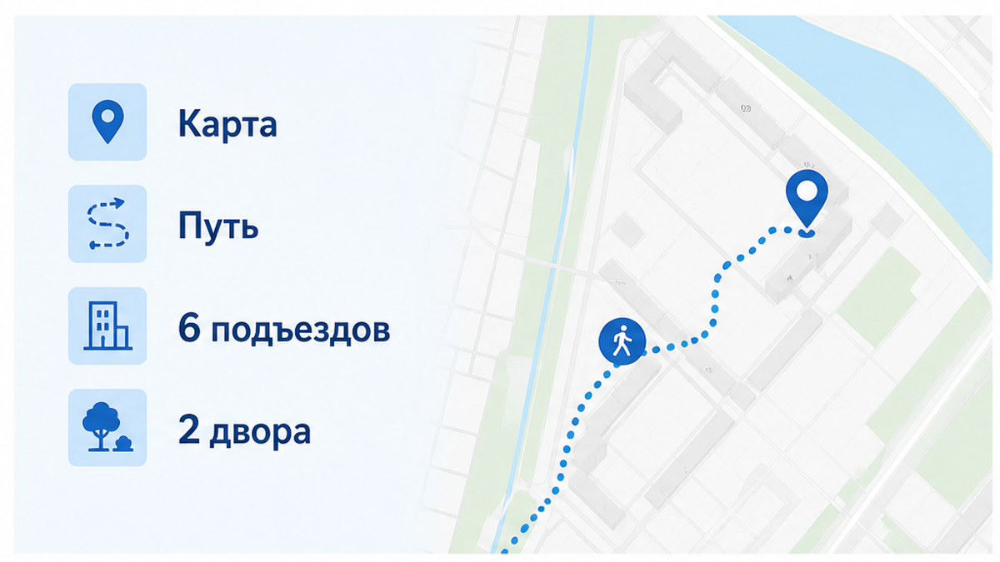
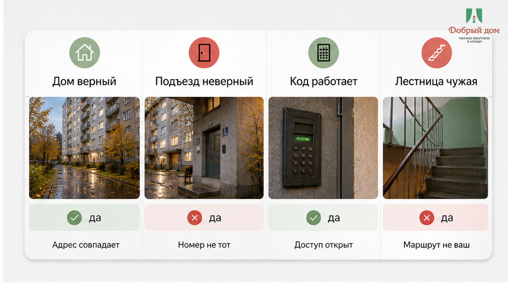
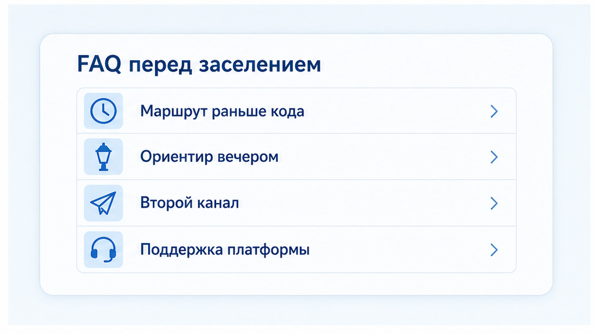
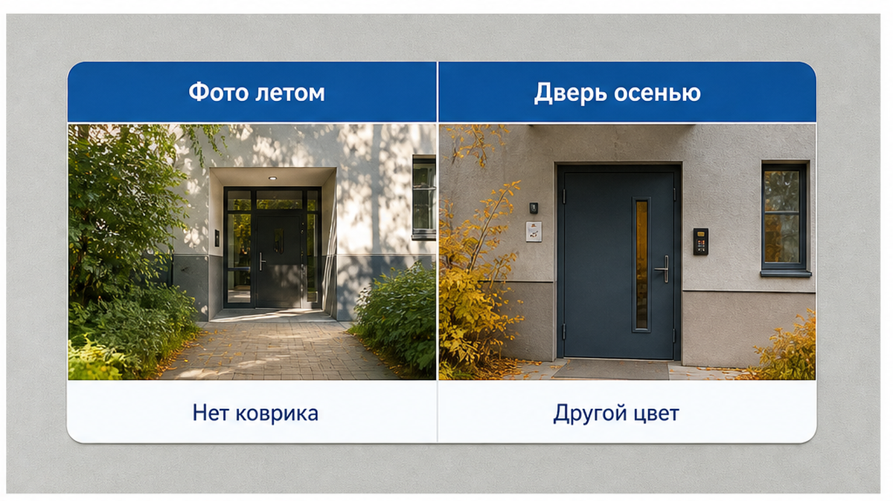
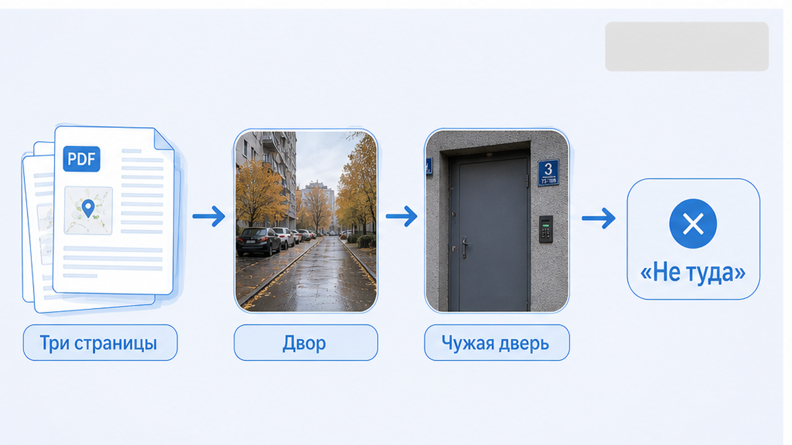
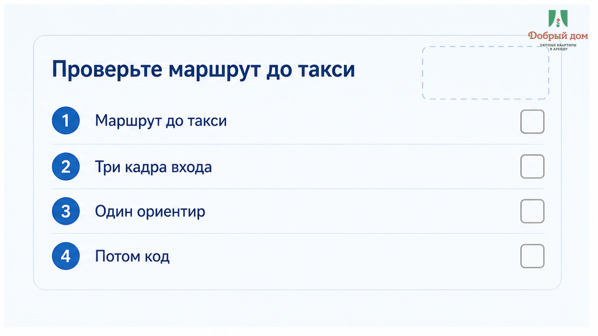
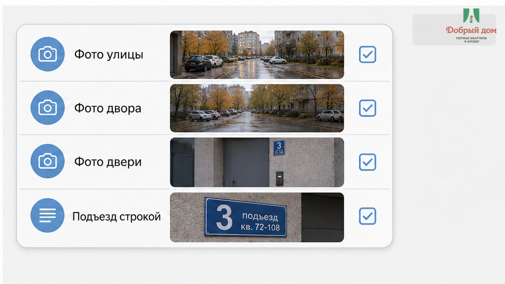

«Вы не туда». Два слова пришли в чат в тот момент, когда такси уже уехало, а чемодан стоял посреди чужого двора. Гость забронировал 2 ночи в Тюмени, заплатил через платформу 9 600 ₽, приехал вечером — осень, темнеет рано, мелкий дождь. До сна оставалось, казалось бы, одно действие: открыть дверь. Хозяин заранее прислал PDF на три страницы: «подъезд 2», код домофона, этаж, ключница, четыре мелкие фотографии. Гость сделал всё по инструкции. Номер дома нашёл верно — тот самый, что указан в брони и навигаторе. Во дворе совпало почти всё: арка, шлагбаум, детская площадка слева. Код сработал, на одной из панелей щёлкнуло, дверь поддалась. Но за ней была лестница без нужного этажа, ключницы и коврика с фотографии. «Это другой подъезд», — ответил хозяин минут через десять, когда человек уже в третий раз перечитывал вторую страницу PDF. Дальше были 35 минут кругами по мокрому асфальту, связь в одну палочку и чемодан, который почему-то становился тяжелее с каждым новым двором.
Вот что здесь важно: не неверный адрес, не сломанный домофон — чужой подъезд при верном доме. Самая неприятная поломка не выглядит поломкой. Дом на месте. Код работает. В инструкции много текста. И человек до последнего думает, что ошибся он сам, а не тот, кто отправил ему маршрут прошлого года.
Я хост посуточной в Тюмени. Это «Добрый дом». Гости пишут мне в Telegram и MAX, и половина вопросов перед заездом — не про полотенца, цену или вид из окна. Люди хотят понять простое: с какой стороны заходить, какую дверь искать, где не надо тащить чемодан через весь двор.


В этой истории особенно липкая иллюзия: всё ведь совпало. Адрес на карте совпал. Дом совпал. Код сработал. PDF выглядел солидно — три страницы, фотографии, пункты. Но адрес и путь от тротуара до двери квартиры — разные вещи. У большого дома одна точка на карте, зато подъездов может быть шесть. Дворов — два. Вход может оказаться с другой стороны, арка после работ во дворе может быть закрыта, а привычный для хозяина ориентир давно перестал быть ориентиром для человека, который приехал впервые.
Гость стоит на площадке чужого подъезда, подсвечивает телефоном вторую страницу, увеличивает пальцами маленькую летнюю фотографию. На ней — край двери, половина коврика, кусок стены. Перед ним дверь другого цвета, коврика нет, стены недавно покрасили. Он пишет: «Я на третьем этаже, ключницы нет». Через десять минут получает: «Вы не туда». И снова выходит под дождь. Не потому, что ему хочется гулять, а потому, что в инструкции нет следующего шага: откуда именно идти и что увидеть перед нужной дверью.
Это не та же история, что код прислали, а домофон молчит. Там человек пришёл к правильной панели, но не получил доступ. Не та же, что код сработал, а ключница пуста: там маршрут пройден, а сбой случился в конце. Здесь ломается раньше. Человека уверенно отправили в правильный дом, но не к правильному входу. И чем увереннее написан текст, тем дольше он пытается найти в реальности то, чего там нет.



Три страницы текста без маршрута от тротуара — не инструкция, а самоуспокоение хозяина. У хозяина возникает чувство, что он всё предусмотрел: написал код, этаж, описание ключницы. У гостя вечером с чемоданом другой режим. Он не читает документ как договор. Он смотрит вокруг и пытается за секунды сопоставить двор с фотографией. Если фотография снята мелко, летом и с неудобного ракурса, она не помогает. Она заставляет сомневаться в себе.
Нормальное самостоятельное заселение держится на четырёх звеньях: адрес, маршрут до подъезда, доступ в дом, доступ в квартиру. Выпадает одно — и вся цепочка начинает звенеть в чате. Поэтому в инструкции маршрут должен стоять раньше кода. Не после длинного абзаца, не в подписи к третьему фото. Отдельно: с какой улицы заходить, какой ориентир увидеть, какой подъезд нужен, как выглядит дверь. В материале, где к ночи кода нет — отчёт горит, я уже говорил об этом порядке: сначала человек должен дойти, и только потом ему нужен код.
С какой стороны двора и у какой двери вы должны оказаться — и есть ли это одним кадром на свежем фото, а не третьей страницей PDF?
Это не придирка и не тревожность гостя. Это проверка реальности. Дворы меняются: ремонтируют проходы, переставляют шлагбаумы, перекрашивают двери, меняют панели. А шаблон в телефоне хозяина остаётся прежним и врёт очень спокойно. Гость же не знает, что фотография устарела. Он просто ходит кругами и считает, что плохо смотрит.
Отдельно усугубляет ситуацию время. Когда коды и инструкции прилетают в последний момент, читать их приходится в машине или уже у дома. Такой фото паспорта в чат — код не пришёл сам по себе создаёт нервозность. Добавьте к нему дождь, тёмный двор и связь, которая пропадает между домами, — получите не мелкую бытовую заминку, а испорченный первый вечер из двух оплаченных ночей.
Вам уже вели по PDF в другой подъезд при верном доме? Напишите в Telegram или MAX — без адреса и номера брони в ленте, просто расскажите, где именно инструкция подвела.


Нет. Так не заселяем. Нельзя отправить человеку файл и мысленно поставить галочку: информация передана. Перед тем как гость отпускает такси, у него должны быть маршрут словами и свежие фотографии именно этого входа: улица, двор, дверь. Один ориентир, который трудно спутать. Номер подъезда — отдельной строкой, а не спрятанный внутри абзаца. После изменений во дворе или замены домофона путь нужно пройти заново и переснять, потому что старый шаблон опаснее явной ошибки: он выглядит убедительно.
Сначала проверка маршрута. Потом такси отпускаете. Не наоборот.
Наш вывод простой. Инструкция без маршрута — как карта клада без первого шага от берега: клад, может, и существует, но копать приходится наугад. Для квартир посуточно в Тюмени это не мелочь сервиса. Это те самые 35 минут, когда дом верный, код рабочий, а человек всё ещё мокнет во дворе с чемоданом.
Нужна ночь в Тюмени с маршрутом до двери, а не с PDF на три страницы: